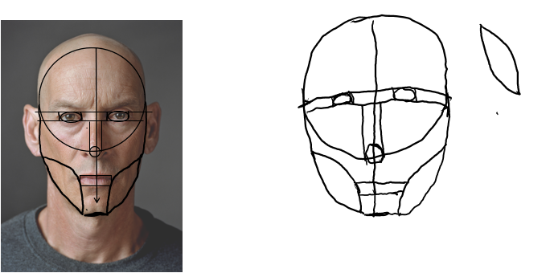
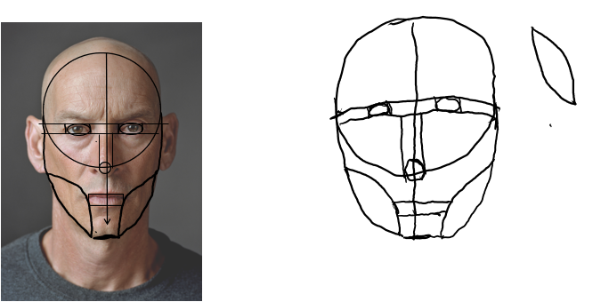

Step Seven
Draw a rounded line that connects to one side to the top line that was drawn. Have the bottom of the rounded line connect to the bottom line that was drawn.
Draw a rounded line that connects to one side to the top line that was drawn. Have the bottom of the rounded line connect to the bottom line that was drawn.
